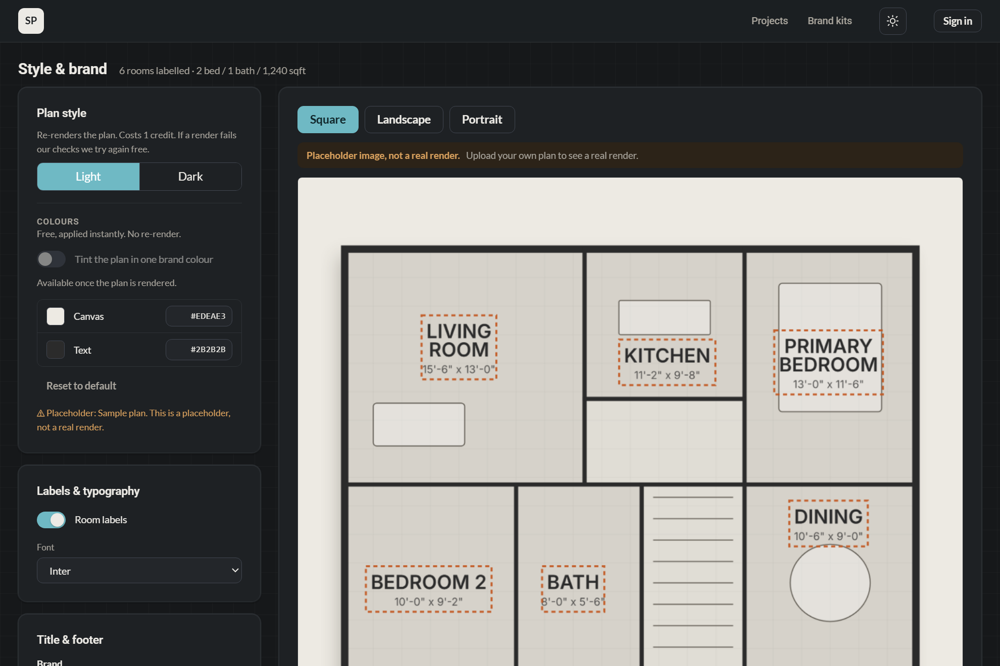
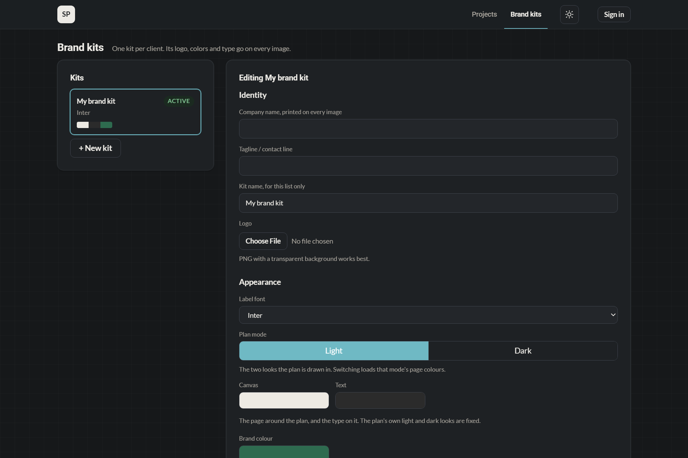
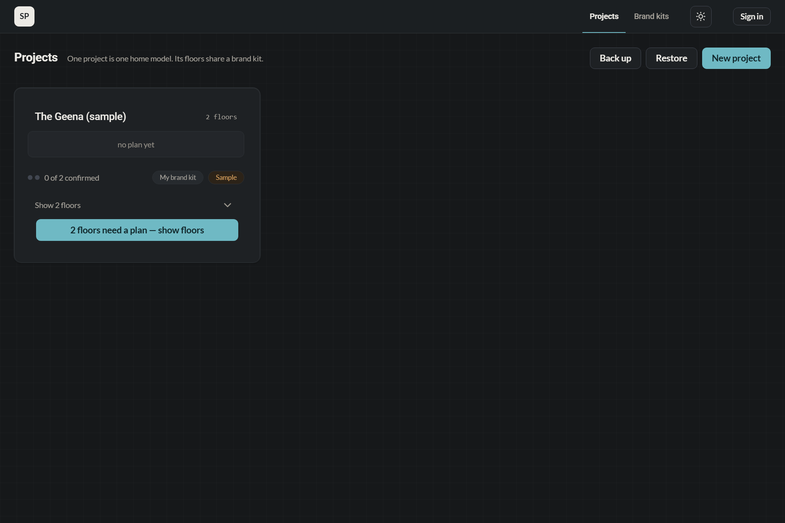

The drawing you build from is not the drawing that sells.
StyloPlan restyles the plan your architect sent into your own brand, in minutes. Every room name and dimension is read off the drawing and confirmed by you before anything is made.
No card to start · you see the plan before you spend
Drag the handle, or focus it and use the arrow keys.
Everything before the render is free
The tracing, the room list, your corrections. A credit buys the picture, nothing else.
Drop in the plan your architect sent
PDF, PNG, JPG or WebP. One project holds every floor of one model, so a plan and its basement stay together.
Correct it before you pay, not after
Every room name and dimension comes back to you off your own drawing. Fixing them costs nothing.
Render it in your own brand
Your palette, your logo, light or dark. When our own checks reject a render, the retry is free.
Take three formats and a 3D view
From the one render. No second credit.
The same plan,
standing up
A walkable 3D view, built from the render you already paid for. Send the link in an email or a message, or embed it on your own site. No second credit.
This is the whole tool
One screen. Your plan on the right, everything that changes it on the left.
- Room names and dimensions read off your drawing, shown in place
- Colour and typography change instantly, with no re-render
- Square, landscape and portrait from the one image
- Nothing renders until you press the button that says what it costs



Three formats, nothing cropped
Most tools crop to fit, and a wing of the house goes. Ours re-lays the page instead, so the plan arrives whole and the dimensions stay readable.
One credit is one floor, in one look
That is the whole meter. Preparing a floor is free, changing your brand afterwards is free, and a render our own checks reject is re-run free.
One storey, one credit. Two storeys, two. Add a basement and it is three. Light and Dark are two looks, so two credits.
- Floors
- 6
- Per floor
- $13.17
- Roughly
- 3 two-storey homes
No card to start · credits never expire
- Floors
- 24
- Per floor
- $10.79
- Roughly
- 12 two-storey homes
No card to start · credits never expire
- Floors
- 72
- Per floor
- $8.74
- Roughly
- 36 two-storey homes
No card to start · credits never expire
Card payment opens shortly. These are the pack prices. Until then your first floor renders on us, and everything you set up now stays yours.
Every plan · three formats · 3D embed · unlimited brand changes · free re-run when our checks reject one